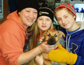
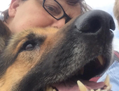

Things We Need
- Kennel Panels
- Kennel fencing and posts
- Old fold down heavy duty dog crates-not the new ones, they weigh a ton
- Dog pails with flat sides and covered connections of handle and pail
- Cash Donation (always welcome)
- 1-800-PetMeds
- Kuranda Dog Bed
- Amazon Smiles
- BarkBox
- Schwan's Cares
- Foster Homes
How We Work

Thinking about adopting a four-legged friend? There's no time like the present. Check out our dogs looking for furever homes.

FaerieLand Rescue Inc. depends on foster homes to care for dogs until suitable homes are found or a puppy is too young to be adopted and needs a safe place to stay until he or she is old enough to go to a furever home.
Additional Info
FaerieLand Rescue Inc. is an all-volunteer nonprofit organization run solely on adoption fees and donations. You can help by sponsoring an individual dog in it's time of need. To sponsor a dog go to their bio and use the link after their description.
Address: PO Box 213, Anoka, MN 55303
Phone: 612 414 4073
Fax: 866 314 2402
Email: faerielandrescue@gmail.com
Phone: 612 414 4073
Fax: 866 314 2402
Email: faerielandrescue@gmail.com